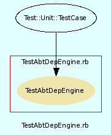

|  |
TestAbtDownloadManager.rb
Unit testing for AbtDownloadManager class.
Created by Eric D. Schabell <erics@abtlinux.org> Copyright 2006, GPL.
This file is part of AbTLinux.
AbTLinux is free software; you can redistribute it and/or modify it under the terms of the GNU General Public License as published by the Free Software Foundation; either version 2 of the License, or (at your option) any later version.
AbTLinux is distributed in the hope that it will be useful, but WITHOUT ANY WARRANTY; without even the implied warranty of MERCHANTABILITY or FITNESS FOR A PARTICULAR PURPOSE. See the GNU General Public License for more details.
You should have received a copy of the GNU General Public License along with AbTLinux; if not, write to the Free Software Foundation, Inc., 51 Franklin St, Fifth Floor, Boston, MA 02110-1301 USA
- setup
- testRetrieveNewsFeed
- testRetrievePackageSource
- testRetrievePackageTree
- testUpdatePackage
- testUpdatePackageTree
setup method for testing AbtDownloadManager.
[ show source ]
# File TestAbtDownloadManager.rb, line 36
36: def setup
37: @download = AbtDownloadManager.new()
38: end
Test method for ‘AbtDownloadManager.testRetrieveNewsFeed()’
[ show source ]
# File TestAbtDownloadManager.rb, line 57
57: def testRetrieveNewsFeed()
58: assert( @download.retrieveNewsFeed(), "testRetrieveNewsFeed()" )
59: end
Test method for ‘AbtDownloadManager.testRetrievePackageSource()’
[ show source ]
# File TestAbtDownloadManager.rb, line 43
43: def testRetrievePackageSource()
44: assert( @download.retrievePackageSource( "dummy" ), "testRetrievePackageSource()" )
45: end
Test method for ‘AbtDownloadManager.testRetrievePackageTree()’
[ show source ]
# File TestAbtDownloadManager.rb, line 50
50: def testRetrievePackageTree()
51: assert( @download.retrievePackageTree( "dummy" ), "testRetrievePackageTree()" )
52: end
Test method for ‘AbtDownloadManager.testUpdatePackage()’
[ show source ]
# File TestAbtDownloadManager.rb, line 64
64: def testUpdatePackage()
65: assert( @download.updatePackage(), "testUpdatePackage()" )
66: end
Test method for ‘AbtDownloadManager.testUpdatePackageTree()’
[ show source ]
# File TestAbtDownloadManager.rb, line 71
71: def testUpdatePackageTree()
72: assert( @download.updatePackageTree(), "testUpdatePackageTree()" )
73: end